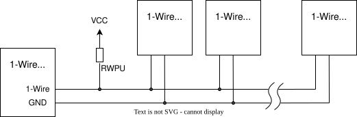

1-Wire 总线
概述
1-Wire 是一种低速半双工串行总线，只用一根信号线加地线，同时完成数据传输和设备供电。与 I2C 类似，1-Wire 使用双向开集电极数据线，是一种单主机多点总线，即由一个主机（master）发起与从机（slave）设备之间的所有数据交换。1-Wire 总线支持比 I2C 更长的总线线路，标准模式下速度可达 15.4 kbps，超速（overdrive）模式下可达 125 kbps。在标准速度配置下，100 米长的总线上可连接 10 个节点并可靠通信。使用超速时，10 米长的总线上连接 3 个节点预计可稳定工作。优化时序参数并减少总线上的节点数，可以支持更长的总线。
实现细节在 BOOK OF IBUTTON STANDARDS 中规定。

W1 主机 API
Zephyr 的 1-Wire 主机 API 用于与温度传感器、串行存储器等 1-Wire 从机设备交互。
在 Zephyr 中，该 API 分为以下几层。
链路层处理总线复位、存在检测和位传输操作等基本通信功能。它是 Zephyr 中唯一与硬件相关的层。该层由一个使用 Zephyr 通用异步收发器（UART） 接口的驱动支持，应能在大多数 Zephyr 平台上工作。将来可能会添加基于 GPIO/定时器的驱动以及硬件特定的驱动。
1-Wire 网络层处理从机识别和总线仲裁的所有手段，包括 Match ROM、Search ROM 等 ROM 命令。
所有从机设备都有一个唯一的 64 位标识号，其中包含 8 位的 1-Wire Family Code 和 8 位 CRC。
为了找出总线上的从机，标准规定了一种搜索算法，可依次检测出总线上的所有从机。该算法在 1-Wire Search Algorithm Application Note 中有描述。
通用 1-Wire 驱动未实现传输层和表示层功能，因此必须在各个从机驱动中处理。
1-Wire API 被视为实验性的。
配置选项
相关配置选项：
W1 串口驱动
zephyr,w1-serial 驱动使用 UART 外设实现 1-Wire 接口。每个 1-Wire 位被编码为通过 UART 发送的一个字节。在标准速度下，数据使用 115200 波特，复位/存在检测使用 9600 波特。在超速模式下，使用可配置的波特率，默认数据为 1000000 波特，复位/存在检测为 115200 波特。
API 参考
1-Wire 数据链路层
- w1_data_link
1-Wire 网络层
- w1_network
1-Wire 通用函数与辅助函数
与任何网络层都不直接相关的函数。
- w1_interface